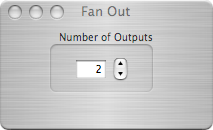
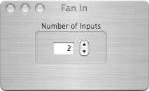

Fan In/Out


Fan Out

A fan out can have up to ten outputs.
Maximum number outputs is ten


Fan In
Since connections can only receive data or commands from one other connection point, a fan in object can be used to indirectly connect one object to many others.
A fan in can have up to ten inputs.

Maximum number outputs is ten